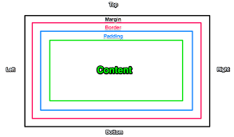

Borders can be apllied to most HTML elements, within the body. To make a border around an element, all you need is border-style. The values can be solid, dotted, dashed, double, groove, ridge, inset and outset. Basic border styles, border-width sets the width of the border, most commonly use pixels as a value. Margin and padding are the two most commonly used properties for spacing-out elements. A margin is the space outside something, whereas padding is the space inside something.
